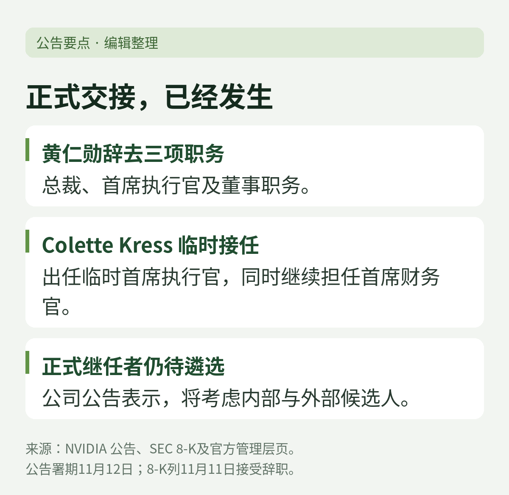
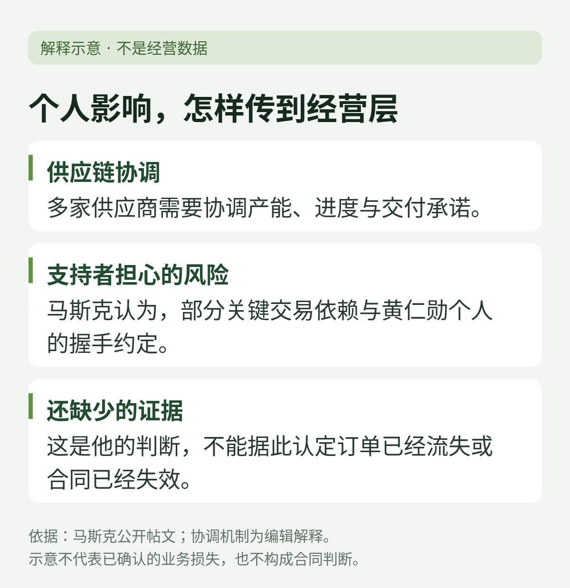
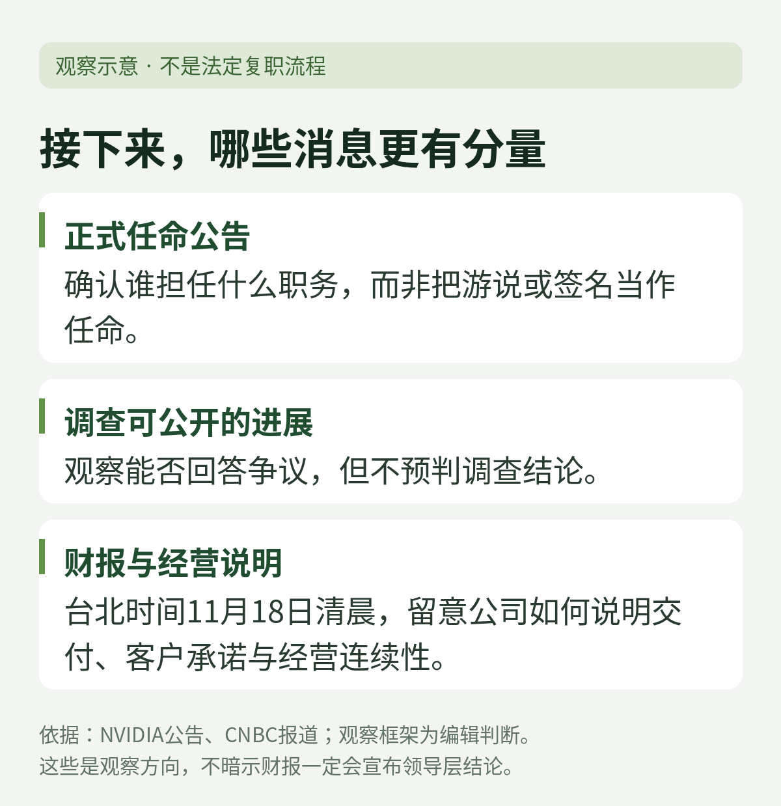

01回归消息传开了，公司现在由谁掌舵？
2026年11月16日凌晨，财经资讯账号WatcherGuru等在社交平台转发消息，称黄仁勋正与盟友商讨重返英伟达担任首席执行官。这则快讯迅速引发广泛讨论，让这家刚完成高层交接的算力巨头，再次成为关注焦点。
追溯消息源头，相关内容来自路透社与CNBC对英国《金融时报》报道的转述，后者引述知情人士称黄仁勋正考虑重返CEO岗位并与亲信探讨可行性。CNBC同时转述称，黄仁勋本人支持相关行动，其盟友正在组建协调团队并试图争取白宫支持。
多家媒体相继转述同一篇报道，容易在传播中给人造成多方独立证实的印象。无论是与亲信私下探讨，还是支持者正在筹建团队，目前都停留在匿名信源描述的场外运作阶段，不能直接当成已经落地的公司决策。
要看清英伟达当前的职务归属，最直接的依据是已经生效的法定披露文件。英伟达在署期11月12日的新闻稿中宣布黄仁勋辞职，而提交美国证交会的8-K文件显示，董事会于11月11日接受其辞去总裁、首席执行官及董事职务并立即生效。
新闻稿发布与8-K文件记录分别对应公开宣布与法律生效的节点，说明原职务交接已经走完正式程序。在英伟达官网当前的管理层页面上，黄仁勋的名字仅列在创始人一栏中，头衔为创始人，不再带有高管或董事职务。
接替日常掌舵职责的是在英伟达担任首席财务官多年的科莱特·克雷斯，其当前官方头衔为临时首席执行官兼执行副总裁、首席财务官。按照过渡公告确立的安排，公司当前公开推进的任务是寻找继任人选，并维持既定的财报发布节奏。

02支持声很大，选帅走到了哪一步？
这场人事震荡源于此前媒体报道引发的个人行为与公司合规争议。据CNBC报道，英伟达董事会正在就相关事项进行独立调查，这一内部核查程序构成了当前讨论管理层去留的重要背景。
本轮核实的公开材料不能支持已违法的结论，媒体报道中的争议或政界人士的质疑也不等同于监管裁决。公司需要怎样回应争议、调查信息是否足以支撑人事判断，依然是董事会需要面对的问题。
针对外界围绕换帅与回归的猜测，英伟达发言人向CNBC给出了直接回应。发言人表示董事会目前正在挑选猎头机构，尚未正式接触潜在候选人，外界对公司内部或外部个别具体人选的推测为时过早。
官方回应表明继任者选拔才刚进入挑选猎头机构的起步阶段，而部分场外传言却已在列举潜在接班名单。面对这种信息落差，读者无需在未经证实的具体人名上耗费精力，只需以公司正式确认的选拔进度作为基准。
在公司按过渡方案推进选拔的同时，呼吁迎回黄仁勋的场外声势正借助一份网络联名请愿扩散。据CNBC报道，这份在线请愿书收集了大量签名并被支持者广泛引用，但参与者的身份信息均由个人自行填报，未经独立核实。
由于缺乏身份核验机制，外界无法把在线请愿的签名情况直接换算成真实的英伟达员工数或股东持股比例。联名活动虽然体现了创始人在科技爱好者与从业者中的人气，但属于外部舆论表达，无法直接转化为董事会的表决票。
03为什么有人担心，换个人就多一道阻力？
既然公司已有资深高管接手过渡期工作，为什么部分行业人士仍希望黄仁勋重返岗位？埃隆·马斯克在社交平台上的公开表态提供了观察切入点，他不仅发帖声援请愿，还表示担心部分关键的供应链交易在缺少黄仁勋时可能面临流失风险。
马斯克的这番话属于算力采购方与同行企业家的个人判断，不能当作已经发生订单违约或客户流失的客观事实。但这一观点触及了争论背后的产业逻辑，即外界担心最高决策者更替会抬高跨企业协同的摩擦成本。
可以用一个简化情境理解这种担忧：假设一项芯片交付需要代工、封装与组件供应商一起提前准备，各方投入的时间和资金，可能取决于对合作能否持续的判断。这是在解释协调机制，不是在披露英伟达某一份真实合同。
在这样的情境里，如果各方长期依靠某位负责人建立信任，更换负责人后，伙伴可能想先确认新团队是否延续原来的承诺。这能解释支持者为何在意黄仁勋本人，但不能据此断定其他管理者无法承担同样的协调工作。
反过来看，交接本来也应当把个人建立的承诺落实到团队和流程中。如果客户关系、产品计划与协调责任已经清楚分工，过渡就未必会造成明显阻力。公开材料还不足以判断，英伟达具体有哪些环节依赖个人、哪些已经由组织承接。
支持黄仁勋回归的观点，正是建立在尽量减少上述内外磨合成本的商业考量之上。这种担忧指向的是中长期战略协同效率，并不代表英伟达现有的日常财务管理或既定订单执行已经出现停摆。

04股东、财长和总统，说的是同一件事吗？
围绕英伟达掌门人去留的争论，很快从产业界延伸到机构投资者与华盛顿政界。各方站在不同的利益与监管立场上发声，不仅股东与官员的诉求存在明显分歧，连美国行政部门内部也释放出了并不一致的信号。
在机构股东层面，Altimeter与Atreides两家投资机构的负责人联名发表了致英伟达董事会的公开信。信中并未要求董事会立刻恢复黄仁勋的职务，而是呼吁选帅过程应放慢节奏、保持审慎与从容，并在事实查清前保留让其重返岗位的选项。
这两家投资机构同时在信中认可克雷斯担任临时首席执行官的过渡安排，认为克雷斯及团队有能力领导过渡，公司有时间审慎决定。公开信也明确承认，若事实查清后董事会认为黄仁勋回归不符合股东利益，做出最终取舍完全属于董事会的职权。
创投机构Y Combinator负责人加里·坦也从程序正义角度表达了相近的看法。他公开主张针对黄仁勋的相关争议应当遵循正当程序，等待完整事实浮出水面，而不应在缺乏完整调查结论时草率定性。
与部分投资人希望留出缓冲空间的态度相反，美国财政部长贝森特提出了强硬的改组要求。据路透社转述福克斯采访报道，贝森特公开表示英伟达必须从公司外部寻找新任首席执行官，并对管理层进行大幅改组。
贝森特还在采访中要求英伟达董事会及外部律师在未来十天内，就公司围绕出口限制建立的合规文化作出解释。这一表态将人事更替与出口管制合规直接挂钩，但属于内阁部长的公开主张，并不代表整个白宫的统一决定。
事实上，来自美国总统层面的最新表态展现出明显不同的态度。据CNBC更新报道与NBC新闻证实，总统特朗普在11月16日向记者谈及黄仁勋重返英伟达的话题时表示自己“不会介意”，并称他认为黄仁勋已经吸取了很大的教训。
特朗普的不反对态度与贝森特要求外部选帅形成反差，说明政界内部对此事并无单一立场。不过总统表态也没有消除分歧。斯卡拉穆奇认为调查阻碍回归，CNBC引述的分析师丹·艾夫斯也不看好复职前景；这些均属个人判断，不能作为董事会决定来读。
05已经离职，再回来需要什么？
既然总统表示不介意、机构股东呼吁保留选项，黄仁勋本人也有回归意愿，为什么这件事仍然不能简单拍板？核心原因在于，挽留一位尚未离职的高管，与重新任命一位已经正式辞职的前掌门人，在公司治理上是两件不同的事。
职位已经交接，回归就需要新的任命。因此，“先保留一个选项”与“今天恢复职务”的差别，不只是措辞轻重：前者是请求董事会不要过早排除可能，后者则要求公司承担任命带来的实际责任。
对董事会来说，拖延和仓促决定都可能有代价。等待可以为核实留出空间，但如果长期没有清楚说明，也可能让员工、客户和合作伙伴难以判断公司的长期安排。这是治理上的权衡，不等于某一条新闻已经证明经营受损。
同样，认可创始人的商业贡献，与要求公司认真处理争议，并不必然冲突。支持者可以要求公平程序，董事会也可以要求足够的信息再决定；不能因为赞同其中一项，就自动接受另一方提出的全部事实判断。
对于外部观察者来说，看清公开信息的知识边界同样关键。本轮已读的公开材料，还不足以还原董事会独立调查的具体范围、进度与结论，也没有给出足以判断下一任首席执行官人选的筛选细节。
在这些信息仍有缺口的情况下，场外各方释放的风声不能替代正式的董事会程序。判断是否出现新的人事安排，应以公司正式公告、证券披露等可核实材料为准，不能凭支持者替公司宣布结果。
06这件事会影响手里的显卡和AI工具吗？
当芯片龙头的高层人事消息频繁刷屏时，普通硬件买家与人工智能工具用户最关心的是日常使用的产品会否受到波及。要把网络上的舆论热度与实际生活影响区分开来，关键在于识别场外消息与真实交付变化之间的界限。
本轮核实的材料，并不能证明管理层交接已经导致显卡供应变化或价格波动。虽然外界无法保证现有产品与服务未来完全不受任何冲击，但在没有官方排产调整通知的情况下，消费者无需因人事传言而盲目抢购。
对于日常使用各类大模型应用的用户而言，算力服务的体验同样取决于云厂商的实际订单交付而非人事传闻。如果管理层过渡或合规审查影响了芯片交付，可能进一步影响云厂商的部署安排。但这只是有条件的传导机制，不能据此断言某款日常应用已经受影响。
普通用户若想判断高层变动是否传导到了日常产品层面，可以通过两类公开渠道进行核实。一是查看英伟达官方发布的新品日程与供货说明，二是留意主流云服务商与人工智能平台是否发布涉及算力维护或服务调整的正式公告。
相比终端产品市场，二级市场股价对高层人事与合规风声的反应往往要敏感得多。在匿名知情人士爆料、在线请愿与政界不同表态交错出现的阶段，市场情绪容易随单条消息剧烈波动，进而放大相关科技股与基金的短期震荡。
普通投资者很难仅凭公开快讯，掌握董事会内部讨论和调查的全部信息。如果把未经证实的私下讨论当成确定性的复职信号，或者把单一官员的表态当成最终监管结论去单边押注，很容易在消息拉锯过程中承受回撤风险。
07接下来，哪些消息值得等？
综合截至2026年11月16日的核实材料，现有证据支持的判断是：英伟达正由克雷斯担任临时首席执行官并挑选猎头，而回归筹划仍属场外推动。无论是股东挽留，还是贝森特与特朗普的不同表态，目前都在传递外部声音，并未改变交接现状。
这一基于当前事实的判断并非固定不变，未来若出现两类实质证据，评估就需随之调整。一是董事会独立调查或合规沟通取得明确进展，改变现有的治理权衡；二是公司发布新的8-K文件或正式公告，披露选帅进展或新的高管任命决议。
在等待实质证据落地的过程中，近期有两个具体时间窗口值得读者跟进。第一个节点是原定于台北时间11月18日清晨举行的英伟达财报发布及电话会议，可以留意临时管理层是否说明业务运转和选帅进展，但不能预设电话会一定会给出答案。
第二个窗口是财政部长要求董事会及外部律师在十天内解释出口限制合规文化的后续动向。这十天属于官员提出的问询期限，并非公司必定公开信息的法定截止日，也不是关闭人事决定通道的节点，但相关互动仍会影响外部合规压力。

跳出短期的人事悬念来看，英伟达眼下经历的震荡，折射出依赖创始人统筹的科技巨头在面对合规审视与制度化交接时的现实考题。无论董事会最终作出何种抉择，公司都需要在维持商业协同效率与满足治理要求之间重新寻找平衡。
未来几天财报电话会上的管理层表态与后续法定披露文件，将为外界提供比场外传闻更可靠的观察坐标。比起提前猜谁赢，更值得追问的是：英伟达会拿出什么具体信息，说明客户承诺和团队协作能平稳延续？